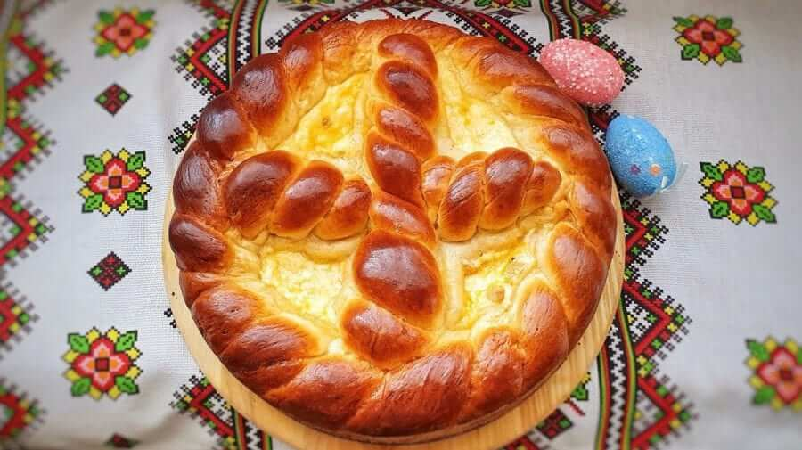
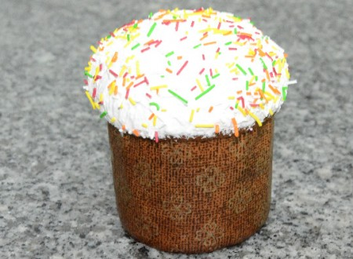
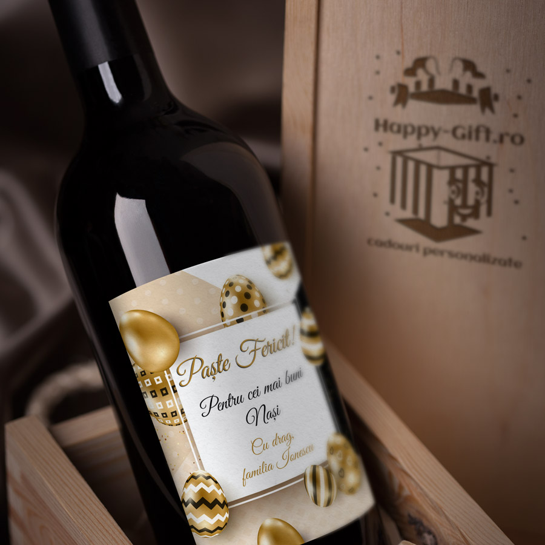
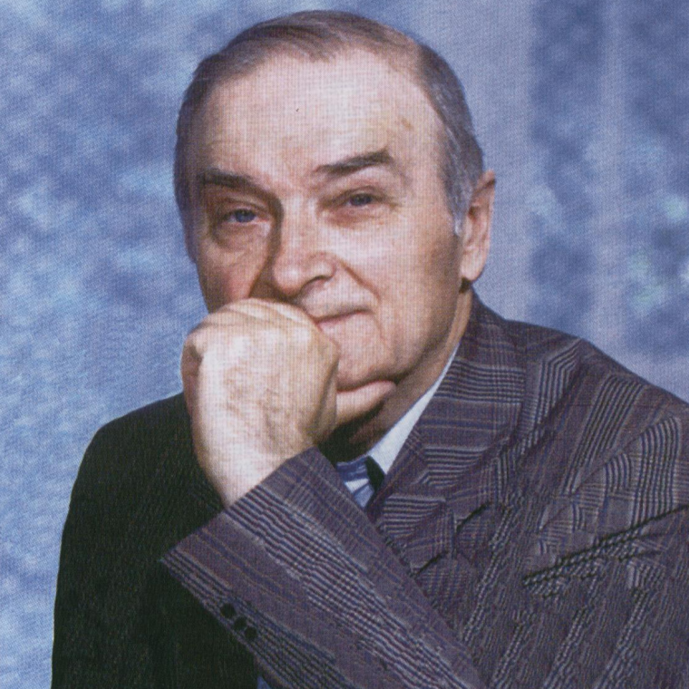

Bucătăria moldovenească de Paște
Feluri de mâncare tradiționale:
- Pască cu brânză
- Cozonac cu nucă și stafide
- Sarmale
- Friptură de miel
- Ouă roșii


Băuturi tradiționale:
- Vin roșu de casă
- Compot de fructe

Literatura și Paștele
Mai mulți autori au scris fragmente emoționante despre Paște. Un exemplu este Ion Druță, care a descris atmosfera din satele moldovenești în perioada sărbătorilor.

← Înapoi la pagina principală